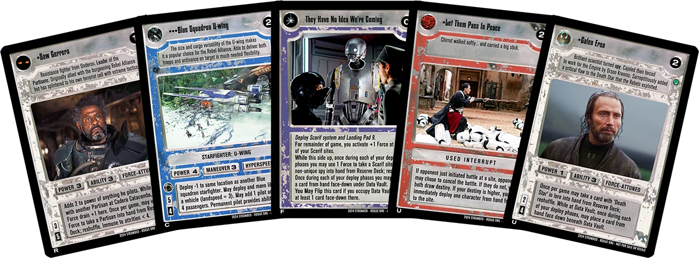
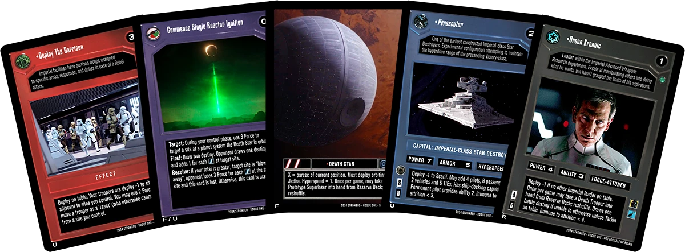

SWCCG Events at GenCon 2024
Full Card List and Set information for Rogue One here
1. Star Wars CCG Custom Rogue One CUBE Draft
** These cards are not for sale and are not endorsed or sponsored by Disney, Lucasfilm, Decipher, or the Star Wars CCG Players Committee in any way. These are my own custom creations, and I claim no ownership or copyright over the images from Rogue One or the gameplay mechanics of Star Wars CCG. **
Have you ever wondered what cards in a Star Wars CCG set about Rogue One might look like? Have you ever wanted to test fire the Prototype Superlaser at a site via Commence Single Reactor Ignition? Do you want to infiltrate the Imperial Archive on Scarif and transmit stolen plans? Come join us for a draft event from my custom Rogue One set - created specifically to facilitate easy draft deckbuilding and limited-environment games. All cards will be provided, just show up ready to play!
Fixed Cards - Each player will receive a "fixed" pack (similar to how the Jabba's Palace Sealed Deck worked) that has 16 cards of one side of the Force. See the Fixed cards in this PDF.
Rules Supplement - Here is a Rules Supplement and Set Information PDF that will give you an idea of the distribution and cards that will be in the set. All Location cards are in the Fixed packs, so there is no concern about drafting locations. The set distribution is loosely inspired by the Endor and Death Star II sets - but explicitly crafted to suit a draft event. This means no cards gametext requires any card that is not available in this set. Additionally, the number and availability of different types, elements, or attributes (for example, 'Partisans') is balanced to make the cards that reference these things usable.
Some previews:  
2. Star Wars CCG 1-2-3 Classic OT Constructed
Deck Construction Rules
- Bring two decks - 1 light side, 1 dark side
- Each deck must contain exactly 60 cards
-
Only cards from the 'Classic Original Trilogy' era of sets are allowed (from Premiere through Jabba's Palace Sealed Deck).
- Refer to the sets listed here https://www.starwarsccg.org/collecting.
- Everything released *before* Reflections II is allowed.
- You may only include 1 copy of each Rare, Premium, or Fixed card.
- You may include up to 2 copies of each Uncommon card.
- You may include up to 3 copies of each Common card.
-
No "Insert" cards are allowed
- Any card that "inserts" into a deck or pile (example: A Disturbance In The Force from Premiere) is not allowed.
-
No 'virtual' cards are allowed
- We will use current 'Errata' text for the original Decipher cards
- The swccg players committee site (starwarsccg.org) has a pdf document with all of the current Eratta text in it by card title.
- This can be daunting to consume - so I will point out that the swccgdb site has an "E" on the bottom-right border of any card with a current Errata update. Their text-box on the left contains the current Errata, so I find it easiest to use this site to double check the wording on cards.
Event Logistics
We will play 4 games, and all attempts will be made to give each player two games with both their Light and Dark sides.
Feel free to print proxy slips of any of the allowed Cards if you use opaque sleeves for your decks. Place the slip in front of a real card in the sleeve.